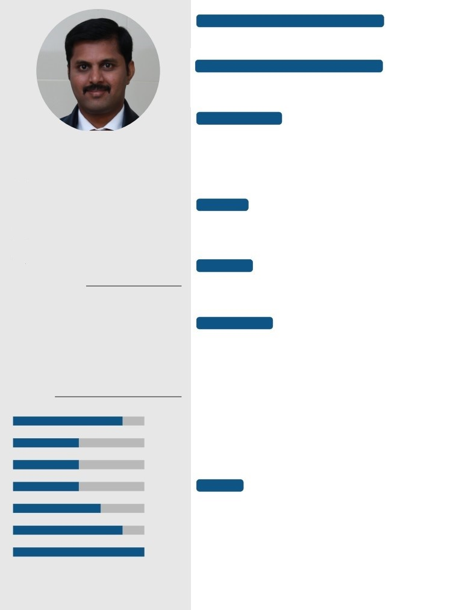

Current Position (Apr 2022 - Present)
Staff Engineer - Clinical Developement
Stryker Global Technology Center
Bengaluru
Work Experiance
2018-2019 ARMY HOSPITAL (RESEARCH AND REFERRAL)
Resident in Department of Pathology
Dr Naveen Kumar R
2012-2017 Indian Navy
Rank - Surg Lt Cdr
Masters in Medical Science and
Commissioned as SSC Officer
Technology
2011-2012 Madras Medical College
Intern
08 Dec 1988
IIT Kharagpur
Education
+91 9539713947
2006-2012 Madras Medical College - Chennai
Bachelor of Medicine, Bachelor of Surgery - MBBS
2004-2006 SRV Matriculation School - Rasipuram
10+2
Languages
Tamil
○○○○○
About me
English
○○○○○
Served in the Indian Navy as Principal Medical
Officer for five years. Skilled in microscopy, histo-
Hindi
○○○○○
pathology, hemato-pathology and molecular
Research Work
pathology techniques. Now pursuing Masters in
Medical Science and Technology from IIT,
2020
Summer Internship
Kharagpur. Interested in AI & translational
Identification of Highly Immunogenic Common T and B Cell
health research. Actively learning interdisciplinary
Epitopes for the Development of a Multiepitope Vaccine for
technical skills required for the medical
SARS CoV-2.
innovations in this new era.
Developed many python based tools and APIs
to automate the epitope identification process.
Skills
2020
Machine Learning Tool
Evidence Based Medicine
Developed python based windows application for outcome
prediction of Proximal humerus fractures after ORIF.Click here
Bio Medical Signal Processing
2020
BMSP Project
Bioinformatics (Biopython)
Algorithm to detect Second degree heart block in Phonocar-
SQL
Interests
Python
• Telemedicine
• Medical Device Innovation
Biostatistics and Data Science
• Biomedical Signal Processing
Good Clinical Practice
• Epigenetics
(*)[The skill
• AI in medicine
scale is from 0 (Fundamental Awareness) to 6 (Ex-
pert).]